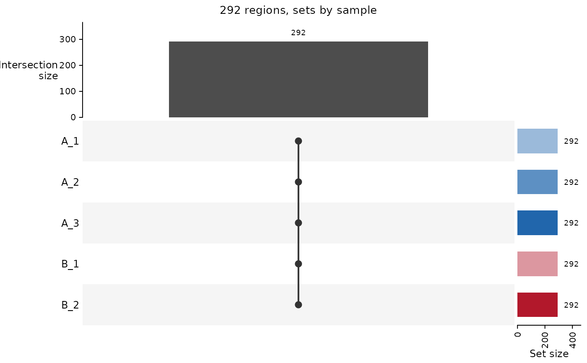

Draws an UpSet plot of the regions of a RegionSetDE object built from peaks, showing which groups have a consensus peak on each region, or which samples have a peak on it. It replaces the Venn diagram, which stops being readable beyond three or four sets.
Usage
plotPeakUpset(
regionSet,
by = "group",
set = NULL,
topIntersections = 30,
groupOrder = NULL,
groupColours = NULL,
title = NULL
)Arguments
- regionSet
RegionSetDEobject returned byloadConsensusPeaks.- by
String indicating the sets of the plot, either
"group", one set per group and its consensus, or"sample", one set per sample and its peaks. Default:"group".- set
Character vector with the region sets to describe. Default:
NULL, all of them.- topIntersections
Numeric value with the largest number of intersections drawn, the biggest ones. Default:
30.- groupOrder
Character vector with the order of the groups. Default:
NULL, alphabetical.- groupColours
Character vector with one colour per group, named after the groups or in the order of
groupOrder. Withby = "sample"the samples of a group take shades of its colour. Default:NULL, the palette of the other plots of the package.- title
String with the title. Default:
NULL, the number of regions described.
Value
An UpSet plot, as a Heatmap object of ComplexHeatmap with one row per set and one column per intersection, drawn when printed and open to ComplexHeatmap::draw for the layout options.
Details
The rows are the regions of the object, the ones that will be counted, and a region counts in a set when it overlaps the consensus of the group or a peak of the sample. After regionMode = "replace" the rows are the regions of the user, and those overlapping no peak at all are reported in the title rather than as an empty intersection. The intersections are exclusive, as in any UpSet plot: a region is counted once, in the combination of sets holding it and in no other.
Examples
if (requireNamespace("consensusRegions", quietly = TRUE) & requireNamespace("ComplexHeatmap", quietly = TRUE)) {
peakFiles <- list.files(system.file("extdata", package = "consensusRegions"),
pattern = "rep[0-9]\\.narrowPeak$", full.names = TRUE)
sampleSheet <- loadSampleSheet(data.frame(sample = c("A_1", "A_2", "A_3", "B_1", "B_2"),
bam = c("A_1.bam", "A_2.bam", "A_3.bam", "B_1.bam", "B_2.bam"),
peaks = peakFiles[c(1, 2, 3, 2, 3)],
condition = c("A", "A", "A", "B", "B")),
checkFiles = FALSE, verbose = FALSE)
regions <- loadConsensusPeaks(sampleSheet, groupBy = "condition", verbose = FALSE)
plotPeakUpset(regions, by = "group")
plotPeakUpset(regions, by = "sample")
}
